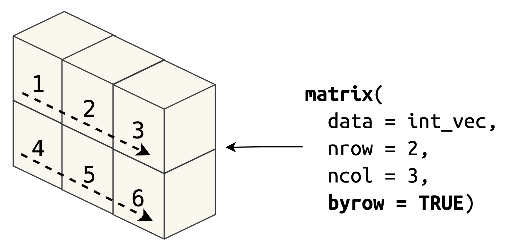
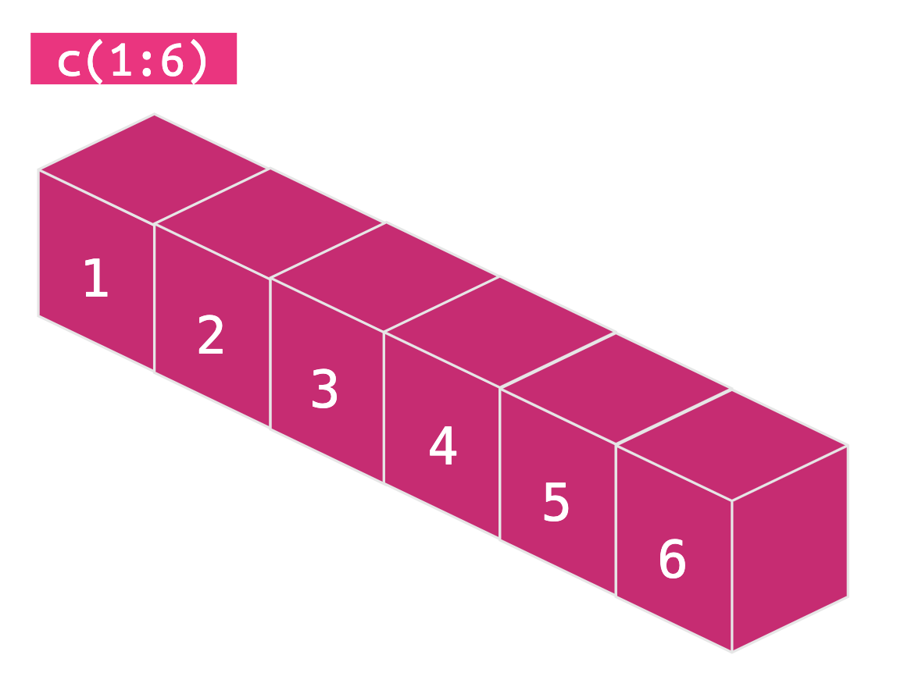

Overview
The following tutorial covers R’s rectangular data objects. If you’re used to seeing data in a table structure (like a spreadsheet with rows and columns), R’s emphasis on vectors might seem strange. The exercises in this tutorial should provide a basic roadmap for how we get from single values, storing values in vectors, and using vectors to build complex datasets.
Tutorial topics include:
- Values &
vectors(review) - The
matrix: a basic two-dimensional object - The
list: a flexible, recursive structure
- A rectangular list (aka the
data.frame)
- A modern update: the
tibble
data.table
Rectangular data are covered in multiple cheatsheets in R. The base R
cheat sheet has a section on the data.frame, the tidyr
cheat sheet covers an introduction to the tibble (the
tidyverse implementation of a data.frame) and the
data.table package has it’s own cheat
sheet.
Values and vectors (quick review)
Data are made up of a collection of values. Values come in all shapes and sizes, but they all quantify, measure, or classify of something. Below are some examples:
If we’re creating (or importing) values into R, we need a way to store them. In R, the vector is the fundamental data object.
Values get stored in vectors according to their class
(or mode). For example, whole numbers are stored in integer
vectors:
int_vec <- seq(1:4)
int_vec
## [1] 1 2 3 4
class(int_vec)
## [1] "integer"And ranked classifications are stored in ordered factors,
fct_vec <- factor(
x = c("never", "rarely", "often", "always"),
levels = c("never", "rarely", "often", "always"),
ordered = TRUE
)
fct_vec
## [1] never rarely often always
## Levels: never < rarely < often < always
class(fct_vec)
## [1] "ordered" "factor"Vector can be simple (atomic) or complex (S3). S3 vectors are built
‘on-top’ of atomic vectors, but have additional classes and attributes
(like "Date", ordered, levels,
etc.).
For example, datetime vectors have two classes
("POSIXct" and "POSIXt"), which are listed in
the attributes along with tzone.
# seconds_per_day
sec_per_day <- 86400
# datetime vector
dtt_vec <- c(Sys.time(), Sys.time() + sec_per_day)
dtt_vec
## [1] "2022-10-17 14:05:31 PDT" "2022-10-18 14:05:31 PDT"
class(dtt_vec)
## [1] "POSIXct" "POSIXt"
attributes(dtt_vec)
## $class
## [1] "POSIXct" "POSIXt"
##
## $tzone
## [1] ""And difftimes have their own class ("difftime") which is
listed in the attributes along with "units".
# difftime vector
dft_vec <- difftime(time1 = Sys.Date() - 7,
time2 = Sys.Date(),
units = "weeks")
dft_vec
## Time difference of -1 weeks
class(dft_vec)
## [1] "difftime"
attributes(dft_vec)
## $class
## [1] "difftime"
##
## $units
## [1] "weeks"One of the limitations of vectors is that they have only get
longer. We can add more values, but this only
extends the length() of the vector.
# 1 through 5
small_int_vec <- seq(1:5)
# 1 though 10
med_int_vec <- seq(1:10)
# check length
length(x = small_int_vec)
## [1] 5
length(x = med_int_vec)
## [1] 10
# combine and re-check length
big_int_vec <- c(small_int_vec, med_int_vec)
length(x = big_int_vec)
## [1] 15Unlike data in a spreadsheet, vectors only come in one dimension,
which is why the dim() function returns a NULL
value when applied to a vector.
dim(x = big_int_vec)
## NULLThis is where the matrix comes in, R’s basic
two-dimensional data structure.
The matrix
The matrix is native to R, so they require no additional
packages to build and use. A matrix can contain rows and columns, but
all of it’s elements must be the same class (i.e., integer, double,
character, logical).
You can read more about their structure here
or by typing ??matrix into the console.
We can create a matrix using the matrix() function (it’s
arguments are displayed below):
matrix(
data = ,
nrow = ,
ncol = ,
byrow = ,
dimnames =
)The nrow and ncol arguments tell matrix how
many rows and columns to create. By default, matrices are filled by
column.
To demonstrate how this works, we’ll start with a vector of numbers
1-6 (int_vec).
int_vec <- c(1:6)
int_vec
## [1] 1 2 3 4 5 6Create a matrix in the code block below:
- Pass
int_vecto the data argument
- Create
int_mat, a matrix with 2 rows by 3 columns - Print
int_mat
____ <- matrix(
data = ____,
nrow = ____,
ncol = ____)
____int_mat <- matrix(
data = int_vec,
nrow = 2,
ncol = 3)
int_matMatrix creation
Notice how the two objects are created. The vector contains all elements in an object six elements long:
The matrix converts those six elements into a two-dimensional object (stacking the values by column).
We can use the length() and dim() functions
to check the structure of each object.
In the code block below:
- Check the length of
int_vec
- Check the dimensions of
int_mat
# check vector length
length(____)
# check matrix dimensions
dim(____)# check vector length
length(int_vec)
# check matrix dimensions
dim(int_mat)byrow
We can change the order of the values in the matrix with the
byrow argument. If we change byrow to
TRUE, we can see the values are filled across the rows (not
down the columns).
In the code block below,
- Pass the
int_vecto the data argument inmatrix()
- Create
int_brow_mat, which is a matrix with 2 rows and 3 columns - Set
byrowtoTRUE
- Print
int_brow_mat
____ <- matrix(
data = ____,
nrow = ____,
ncol = ____,
byrow = ____
)
____int_brow_mat <- matrix(
data = int_vec,
nrow = 2,
ncol = 3,
byrow = TRUE
)
int_brow_matNotice how matrix() creates the object without the
byrow set to TRUE:

The matrix columns and rows are contained in the
dimension (dim) attribute. See below:
attributes(int_mat)
## $dim
## [1] 2 3Matrix subsetting
If we’re trying to access specific elements within a vector, we can
use the brackets [] and a numerical index:
int_vec[3]
## [1] 3With a matrix, we have to index elements using two positions: one for the row, the other for the column:
matrix[row, column]The matrix actually displays these indexes when it’s printed to the screen:
[,1] [,2] [,3]
[1,] 1 3 5
[2,] 2 4 6In the code blocks below, complete the following subsetting operations:
- Subset the elements at row position
1and column position2
int_mat[ ____, ____]int_mat[ 1, 2]- Subset the elements in the second row.
int_mat[ ____, ]int_mat[ 2, ]- Subset the elements in the third column.
int_mat[ , ____]int_mat[ , 3]- Subset columns
2and3only:
int_mat[ , c(____, ____)]int_mat[ , c(2, 3)]Matrix coercion
A matrix can only hold values of the same type. If we
try to combine values with different types, the matrix
follows the same coercion rules that govern how vectors are created.
In the code block below,
- Create a
matrixwith the two vectors:x_intandz_chr
- Give the matrix 3 rows and 2 columns
- Check the type of with
typeof()
# integer vector
x_int <- c(5L, 1L, 3L)
# character vector
z_chr <- c("A", "B", "C")
# matrix
xz_mat <- matrix(
data = c(____, ____),
nrow = ____,
ncol = ____)
typeof(____)# integer vector
x_int <- c(5L, 1L, 3L)
# character vector
z_chr <- c("A", "B", "C")
# matrix
xz_mat <- matrix(
data = c(x_int, z_chr),
nrow = 3,
ncol = 2)
typeof(xz_mat)We can see that if we create a matrix with an integer vector
(x_var) and character vector (z_var), the
result are coerced into a character.
colnames() and rownames()
After the matrix has been created, we can assign names using the
colnames() and rownames() functions.
In the code block below,
- Assign the
c_nmsvector to the columns inint_matwithcolnames() - Assign the
r_nmsvector to the rows inint_matwithrownames()
- Print
int_mat
int_mat <- matrix(
data = 1:6,
nrow = 3,
ncol = 2)
# column names
c_nms <- c("column 1", "column 2")
# row names
r_nms <- c("row 1", "row 2", "row 3")
# assign column names
colnames(int_mat) <- ____
# assign row names
rownames(int_mat) <- ____
# print int_mat
____int_mat <- matrix(
data = 1:6,
nrow = 3,
ncol = 2)
c_nms <- c("column 1", "column 2")
r_nms <- c("row 1", "row 2", "row 3")
colnames(int_mat) <- c_nms
rownames(int_mat) <- r_nms
int_matdimnames
Matrices also have the ability to store dimension names (as
dimnames). These are passed to the matrix()
function using a list() (which we will cover next).
The list
Lists are not rectangular per se, but they’re an important part of
two-dimensional data objects in R. As we saw above, we can’t assign
dimnames to a matrix without using a
list()–this is because a list can contain objects of
different size (or length()).
What problems are solved with a list()?
When we add dimnames to a matrix, the
values are given in a list() as two character vectors.
These vectors have to be the same lengths of the nrow and
ncol.
test_matrix <- matrix(
data = c(
c(1L, 2L, 3L, 10L, 11L, 12L)
),
nrow = 3, # three rows
ncol = 2, # two columns
dimnames = list(
c("r1", "r2", "r3"), # three row names
c("c1", "c2"))) # two column namesLet’s check the structure of the test_matrix:
str(test_matrix)We see the values we gave to the data argument:
# int [1:3, 1:2] 1 2 3 10 11 12dimnames are stored as an attribute:
# - attr(*, "dimnames")`The list of row and column names (as two chr
vectors):
# List of 2
# ..$ : chr [1:3] "r1" "r2" "r3"
# ..$ : chr [1:2] "c1" "c2"Practice making list()s
Complete the code block below:
- The
list()supplied todimnamesshould have two vectors:
- the first vector is the names for the rows
(
c("row 1", "row 2", "row 3"))
- the second vector is the names for the columns
(
c("column 1", "column 2"))
matrix(
data = 1:6,
nrow = 3,
ncol = 2,
dimnames = list(
# place the row names on the line below, followed by a comma
____
# place the column names on the line below
____
))matrix(
data = 1:6,
nrow = 3,
ncol = 2,
dimnames = list(
# place the row names on the line below followed by a comma
c("row 1", "row 2", "row 3"),
# place the column names on the line below
c("column 1", "column 2")
))Three things to know about lists
In the example above, we created a matrix with
dimnames using a list(). We’ll explore lists
more in another tutorial, but there are a few important features lists
possess that we should address.
First, lists can contain elements with different classes (or modes).
Create small_list in the code block below:
- Place the vectors next to their appropriate name
- Assign the output form list to
small_list
- Print
small_listto the screen for review
# logical vector
log_vector <- c(TRUE, FALSE, TRUE)
# integer vector
int_vector <- seq(1:3)
# character vector
chr_vector <- c("A", "B", "C")
# list
____ <- list(
'logical' = ____,
'integer' = ____,
'character' = ____
)
____# logical vector
log_vector <- c(TRUE, FALSE, TRUE)
# integer vector
int_vector <- seq(1:3)
# character vector
chr_vector <- c("A", "B", "C")
# list
small_list <- list(
'logical' = log_vector,
'integer' = int_vector,
'character' = chr_vector
)
small_listSecond, lists can contain elements of unequal lengths.
Even unequal lengths of more complex vectors
In the code block below:
- Place the vectors next to their correct names
(
'small integer'and'big character')
- Assign the output from
list()tounequal_list
- Print the
unequal_listto the screen for review
# small integer
small_int_vec <- 1:3
# big character
big_chr_vec <- c("d", "e", "f", "g", "h")
# create list
____ <- list(
'____' = small_int_vec,
'____' = big_chr_vec
)
# print
____# small integer
small_int_vec <- 1:3
# big character
big_chr_vec <- c("d", "e", "f", "g", "h")
# create list
unequal_list <- list(
'small integer' = small_int_vec,
'big character' = big_chr_vec
)
# print
unequal_listLastly, lists are recursive, so they can even store other lists!
In the code block below,
- Create
big_listusingsmall_listandunequal_list
- Print
big_listto the screen for review
____ <- list(
'small list' = ____,
'unequal list' = ____
)
____big_list <- list(
'small list' = small_list,
'unequal list' = unequal_list
)
big_listBecause of their flexible containment structure, lists are great for
capturing and storing objects of just about any type or size (this
is an important feature we want to borrow to create a
data.frame)
Flexible, but with constraints
Let’s recap what we know about matrices:
1. A matrix is made up of elements of the same class (or
mode)

2. A matrix is a two-dimensional object
3. A matrix can have named columns and rows (provided to the
dimnames argument in a list())
Let’s recap what we know about lists:
1. Lists can contain elements of different class (or
mode()) and size (or length())
The code below creates the following list:
## $int
## [1] 1 2 3 4
##
## $chr
## [1] "A" "B"
##
## $fct
## [1] low med high
## Levels: low < med < high
##
## $date
## [1] "2022-10-17" "2022-10-18" "2022-10-16"You’ll notice the elements of a list are indexed using $
and the name (i.e., $int, $chr,
$fct, etc.). Each element in the list is then referenced
with a single bracket ([1]).
I’ve placed the indexes above the elements in the figure below for reference:
2. Lists can contain other lists (i.e. they’re recursive)
The code below adds two lists (lst_log and
lst_dbl) to the list we created above.
## $int
## [1] 1 2 3 4
##
## $chr
## [1] "A" "B"
##
## $fct
## [1] low med high
## Levels: low < med < high
##
## $date
## [1] "2022-10-17" "2022-10-18" "2022-10-16"
##
## $lst_log
## $lst_log$log
## [1] TRUE
##
##
## $lst_dbl
## $lst_dbl$dbl
## [1] 1.5 2.3When we combine lists with lists, we can see the structure of the
list becomes much more complex. These are added as elements
$lst_log$log and $lst_dbl$dbl:
Flexibility is one the strengths of lists–they are great for storing multiple objects (espcially if you have a mix of data types). However, the flexibility comes with a tradeoff. List structures can quickly become hard to reliably extract data from.
For example, let’s view our list when we add another list that contains vectors of different types and lengths:
Below is our updated list:
## $int
## [1] 1 2 3 4
##
## $chr
## [1] "A" "B"
##
## $fct
## [1] low med high
## Levels: low < med < high
##
## $date
## [1] "2022-10-17" "2022-10-18" "2022-10-16"
##
## $lst_log
## $lst_log$log
## [1] TRUE
##
##
## $lst_dbl
## $lst_dbl$dbl
## [1] 1.5 2.3
##
##
## $lst_comb
## $lst_comb$int2
## [1] 1 2 3
##
## $lst_comb$date2
## [1] "2022-10-17 14:05:34 PDT" "2022-10-17 14:05:35 PDT"
##
## $lst_comb$chr2
## [1] "A" "B" "C"Below is our updated figure:
As we can see–it would be hard to convert this list into a spreadsheet in it’s current form. Spreadsheets typically contain values in a variety of formats (numbers, text, dates, etc.), but they have a consistent structure.
An ideal rectangular data object would borrow two characteristics from a matrix:
- Have two dimensions
- Nameable columns and rows
We also want our rectangular data object to be able to store multiple data formats (which we can do with lists).
The data.frame
The data.frame combines the flexible storage ability of
a list and the row and column structure
(dimensions) of a matrix. In data.frames,
vectors of different classes are stored in the columns, but these
columns must all have equal lengths.
Structure
The data.frame is also native to R, and it’s structure
is similar to a matrix and a list. Like, matrices,
data.frames are organized in columns and rows, but unlike
matrices, the data.frame can contain vectors of different
types.
The data.frame is considered a list, but a
list which each element is a vector of the same length.
You can read more about their structure here
or by typing ??data.frame into the console.
As stated above, a data.frame is a list of vectors of
equal length. The data.frame() function is most commonly
used in one of two ways:
- Create a
data.frameby providing names and vector contents:
data.frame(
x = c(1, 2, 3),
y = c(TRUE, FALSE, FALSE),
z = c("A", "B", "C")
)
## x y z
## 1 1 TRUE A
## 2 2 FALSE B
## 3 3 FALSE C- Create vectors first, then assign new names in
data.frame()
xvar <- c(1, 2, 3)
yvar <- c(TRUE, FALSE, FALSE)
zvar <- c("A", "B", "C")
data.frame(
x = xvar,
y = yvar,
z = zvar
)
## x y z
## 1 1 TRUE A
## 2 2 FALSE B
## 3 3 FALSE CCreate data.frames
We’re going to create a data.frame of Wu-Tang Clan
members. We’ve loaded the four vectors in the code block below:
wu_members: member names
wu_name: birth names
wu_born: year born
wu_cities: city from
Build wu_df by assigning the appropriate vector to the
column in the data.frame
wu_df <- data.frame(
"member" = ____,
"name" = ____,
"born" = ____,
"city" = ____
)
# print wu_df to the screen below:
____wu_df <- data.frame(
"member" = wu_members,
"name" = wu_name,
"born" = wu_born,
"city" = wu_cities
)
# print wu_df to the screen below:
wu_dfWe can also build data.frames using a combination of
named vectors and created vectors.
In the code block below, we’ve loaded two vectors
(wu_members and wu_name):
- Use the named vectors to create the member and name columns
- Move the code for
bornandcityinto the correct column names
# born column
c(1969L, 1966L, 1968L, 1971L, 1970L,
1970L, 1970L, 1970L, 1969L, 1968L)
# city column
c("New York City", "New York City",
"New York City", "Hempstead, Long Island",
"New York City", "Staten Island, New York City",
"New York City", "New York City",
"New York City", "New York City")
wu_df <- data.frame(
"member" = ____,
"name" = ____,
"born" = ____,
"city" = ____
)
# print wu_df to the screen below:
____wu_df <- data.frame(
"member" = wu_members,
"name" = wu_name,
"born" = c(1969L, 1966L, 1968L, 1971L, 1970L,
1970L, 1970L, 1970L, 1969L, 1968L),
"city" = c("New York City", "New York City",
"New York City", "Hempstead, Long Island",
"New York City", "Staten Island, New York City",
"New York City", "New York City",
"New York City", "New York City")
)
# print wu_df to the screen below:
wu_dfColumns and rows
As we’ve stated above, data.frames in R are similar to
spreadsheets. The data are organized in columns and rows.
In the code block below:
- Place
wu_dfinside thecolnames()function
- Place
wu_dfinside therownames()function
colnames(____)
rownames(____)colnames(wu_df)
rownames(wu_df)We can see colnames() prints the four column names (or
vectors). The rownames() function returns a character
vector of numbers (one for each row in wu_df).
In the code block below:
- Check the structure of
wu_dfusingstr()
# put the wu_df inside the str() function
str(____)# put the wu_df inside the str() function
str(wu_df)str() tells us the class/mode of wu_df
('data.frame'), and the dimensions
(10 obs. of 4 variables:). We can also see the class or
type of each column (chr or int).
Recap
We’ve learned data.frames are the logical extension from
matrices, because they retain the rectangular structure (with rows and
columns), but can contain multiple classes/types of vectors (unlike
matrices).
The tibble
The tibble comes from the tibble
package, which is part of the tidyverse.
tibbles are a “modern re-imagining of the
data.frame, keeping what time has proven to be effective,
and throwing out what is not.”

A tibble is similar to a data.frame, but
has two additional classes (tbl and tbl_df).
You can read more about tibbles on the website or in the R for Data Science
text.
We can create tibbles using one of two functions:
tibble() or tribble()
Creating tibbles with tibble()
The tibble() function works a lot like the
data.frame() function.
tibble(
...,
.rows = NULL,
.name_repair = c("check_unique", "unique", "universal", "minimal")
)We can pass named vectors or values directly to the column names.
In the code block below we’ve loaded the following vectors:
wu_members: member names
wu_name: birth names
wu_born: year born
wu_alive: still alive?
- Create
wu_tbl–atibblewith the vectors above (using the appropriate column name provided) - Print
wu_tblto the screen
tibble(
members = ____,
name = ____,
born = ____,
alive = ____
)
# print tibble
____wu_tbl <- tibble(
members = wu_members,
name = wu_name,
born = wu_born,
alive = wu_alive
)
# print tibble
wu_tblCreating tibbles with tribble()
The tribble() function will create a row-wise tibble.
This means we can enter our data left-to-right (the same way we might in
a spreadsheet). We define column names with a preceding ~,
and place values directly under their respective name.
tribble(
~chr_col, ~int_col,
"a", 1,
"b", 2,
"c", 3
)We’re going to see how this works using our Wu-Tang Clan data.
In the code block below:
- Create
wu_tblagain, but this time usetrbbleand give the tibble the following names:members,name,born,alive(assigning the correct column names, preceded by the~). - Print the
wu_tblto the screen
# give the tibble names
wu_tbl <- tibble::tribble(
~____, ~____, ~____, ~____,
"RZA", "Robert Fitzgerald Diggs", 1969L, TRUE,
"GZA", "Gary Eldridge Gric", 1966L, TRUE,
"ODB", "Russell Tyrone Jones", 1968L, FALSE,
"Method Man", "Clifford Smith, Jr.", 1971L, TRUE,
"Raekwon", "Corey Woods", 1970L, TRUE,
"Ghostface Killah", "Dennis Coles", 1970L, TRUE,
"Inspectah Deck", "Jason Richard Hunter", 1970L, TRUE,
"U-God", "Lamont Jody Hawkins", 1970L, TRUE,
"Masta Killa", "Jamel Irief", 1969L, TRUE,
"Cappadonna", "Darryl Hill", 1968L, TRUE
)
# print wu_tbl
____# give the tibble names
wu_tbl <- tibble::tribble(
~members, ~name, ~born, ~alive,
"RZA", "Robert Fitzgerald Diggs", 1969L, TRUE,
"GZA", "Gary Eldridge Gric", 1966L, TRUE,
"ODB", "Russell Tyrone Jones", 1968L, FALSE,
"Method Man", "Clifford Smith, Jr.", 1971L, TRUE,
"Raekwon", "Corey Woods", 1970L, TRUE,
"Ghostface Killah", "Dennis Coles", 1970L, TRUE,
"Inspectah Deck", "Jason Richard Hunter", 1970L, TRUE,
"U-God", "Lamont Jody Hawkins", 1970L, TRUE,
"Masta Killa", "Jamel Irief", 1969L, TRUE,
"Cappadonna", "Darryl Hill", 1968L, TRUE
)
# print wu_tbl
wu_tbltibble structure
Place wu_tbl inside the str() function and
click on the Run Code button below to view it’s
structure:
# put the tibble inside the str() function
str()str(wu_tbl)The output from str(wu_tbl) prints the number of rows x
columns ([5 × 4]) and the class
(S3: tbl_df/tbl/data.frame), and a preview of it’s
contents.
Printing tibbles
tibbles print to the screen a little nicer to the
screen. Print wu_tbl in the code chunk below:
# print wu_tbl
We can see the format of each column is also printed with the output
(<chr>, <int>,
<lgl>). Compare this to wu_df in the
code chunk below:
# print wu_df
We can see the data.frame prints the contents, but no
additional information about the dimensions or column class/type.
The data.table
data.table objects from from thedata.table
package, and these are “a high-performance version of base R’s
data.frame.”
Structure
The data.table is also similar to the
data.frame (it has two classes, data.table and
data.frame). The syntax for using data.tables
can be challenging at first, but they’re known for being more memory
efficient, and performing manipulation operations are generally faster
than tibbles or data.frames.
Technically speaking, a data.table is a
data.frame (but an enhanced
data.frame). Enhanced how? All of the enhancements are
listed on the package
website, but we’ll include a few here:
- concise syntax: fast to type, fast to read
- fast speed
- memory efficient
Most people turn to data.table when they’re dealing with
large datasets or performing operations with multiple tables (joining,
row-subsetting, grouping, etc.). Users with a background in SQL will
find data.tables syntax familiar.
DT[i, j, by]
## R: i j by
## SQL: where | order by select | update group byCreating data.tables
To create a data.table, you can use the same methods you
used above to create a data.frame.
In the code block below:
- Create
wu_dtusing data.table and the following vectors (which have been loaded for you):
wu_members: member names
wu_name: birth names
wu_born: year born
wu_alive: still alive?
- Print
wu_dtto the screen
wu_dt <- data.table(
member = ____,
name = ____,
born = ____,
alive = ____
)
# print wu_dt
wu_dt <- data.table(
member = wu_members,
name = wu_name,
born = wu_born,
alive = wu_alive
)
# print wu_dt
wu_dtAs we can see, the output from printing the data.table
is identical to the output form data.frame
data.table structure
Place wu_dt inside the str() function and
click on the Run Code button below to view it’s
structure:
# view the structure of the data.table
str(____)# view the structure of the data.table
str(wu_dt)We can see the output from str(wu_dt) tells us this is
indeed a data.table and a data.frame.
It also prints the dimensions in the same method as the
data.frame (10 obs. of 4 variables).
Comparisons
We’ve loaded wu_df, wu_tbl, and
wu_dt in the code blocks below:
Check class()
# check the class of wu_df
class(____)
# check the class of wu_tbl
class(____)
# check the class of wu_dt
class(____)# check the class of wu_df
class(wu_df)
# check the class of wu_tbl
class(wu_tbl)
# check the class of wu_dt
class(wu_dt)Check typeof()
In the previous solution, we learned tibbles and
data.tables have multiple classes. Now let’s check their
typeof()
# check the type of wu_df
typeof(____)
# check the type of wu_tbl
typeof(____)
# check the type of wu_dt
typeof(____)# check the type of wu_df
typeof(wu_df)
# check the type of wu_tbl
typeof(wu_tbl)
# check the type of wu_dt
typeof(wu_dt)Are you surprised to find out all of these are lists? That’s because they all have the underlying structure (i.e., a list of vectors of equal length).
Let’s check their attributes.
Check attributes()
# check the attributes of wu_df
attributes(____)# check the attributes of wu_df
attributes(wu_df)# check the attributes of wu_tbl
attributes(____)# check the attributes of wu_tbl
attributes(wu_tbl)We can see the attributes for data.frames and
tibbles are nearly identical. How about the
data.table?
# check the attributes of wu_dt
attributes(____)# check the attributes of wu_dt
attributes(wu_dt)What is the $.internal.selfref?
The .internal.selfref is an attribute that keeps
data.tables from copying over itself (read a complete
explanation here,
“It’s simply an attribute attached to DT that contains the address in RAM of DT. If R inadvertently copies DT, the address of DT will move in RAM but the attribute attached will still contain the old memory address, they won’t match any more. data.table checks they do match (i.e. is valid) before adding a new column by reference into a spare column pointer slot.”
Conversions
Each of these objects can be converted into the other.
data.frame -> data.table
- Convert
wu_dfto adata.tablewithas.data.table()and store inwu_df2dt - View the structure of
wu_df2dt
# convert wu_df to data.table
wu_df2dt <- as.data.table(____)
str(____)# convert wu_df to data.table
wu_df2dt <- as.data.table(wu_df)
str(wu_df2dt)tibble -> data.table
- Convert
wu_tblto adata.tablewithas.data.table()and store inwu_tbl2dt - View the structure of
wu_tbl2dt
# convert wu_df to data.table
wu_tbl2dt <- as.data.table(____)
str(____)# convert wu_df to data.table
wu_tbl2dt <- as.data.table(wu_tbl)
str(wu_tbl2dt)data.table -> tibble
- Convert
wu_dtto atibblewithas.tibble()and store inwu_dt2tbl - View the structure of
wu_dt2tbl
# convert wu_df to tibble
wu_dt2tbl <- as.tibble(____)
str(____)# convert wu_df to tibble
wu_dt2tbl <- as.tibble(wu_dt)
str(wu_dt2tbl)Recap
In this tutorial we learned about R’s four rectangular data objects:
the
matrix: created withmatrix(),nrow,ncol,byrow(optional), anddimnames(optional). Matrices are like vectors in the sense that they must contain vectors of the same class or type. A list of names can be used to set the column and row names (or withrownames()andcolnames()).The
data.frame: created withdata.frame()using either named vectors or values (withc()).data.frames can contain vectors of different class/type (like lists), but all vectors must be the same length.The
tibble: created with eithertibble()ortribble(), a tibble is an improved extension of thedata.frame, with more a descriptive printing display. Primarily used in thetidyverse.The
data.table: created withdata.table(), these are enhanceddata.frames with an additional attribute (.internal.selfref) and better performance (faster and more memory efficient thandata.frames).